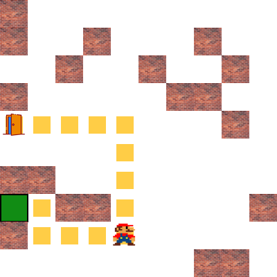
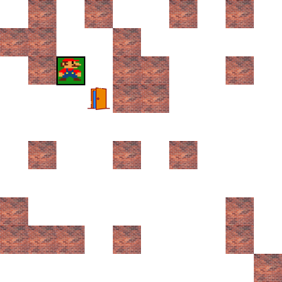
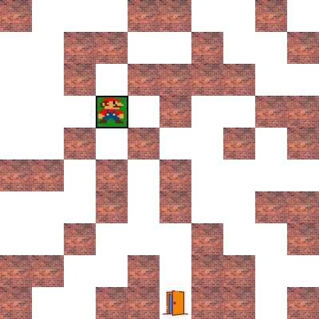

Interactive Maze Generation
Create random mazes with different wall densities and experiment with how obstacle placement changes the search problem.
COSC 316 - RHU - Fall 2024
This project was built for the Design and Analysis of Algorithms course at Rafik Hariri University. It turns maze traversal into a visual desktop experience where users can generate obstacles, adjust maze size, and watch the solver move from start to goal.

Project Summary
Create random mazes with different wall densities and experiment with how obstacle placement changes the search problem.
See the route from the start point to the destination through an animated game-style interface built with Python Tkinter.
Connect abstract shortest-path ideas from class to a working implementation that can be tested and observed in real time.
Screenshots


Course Reflection
This project helped translate course theory into implementation. Instead of only discussing shortest-path problems in class, I built a visual system that represents a maze as a graph-like grid and shows how a solver can search for a route under constraints.
Implementation Note
The current code uses A* search with a Manhattan-distance heuristic. The repository name references Dijkstra's algorithm, but the implemented solver is heuristic-based.
A strong next improvement would be adding a true Dijkstra implementation and comparing both approaches side by side.
Run Locally
pip install -r requirements.txt
python main.pyGitHub Pages hosts this overview site. The Python Tkinter application itself still runs locally as a desktop app.